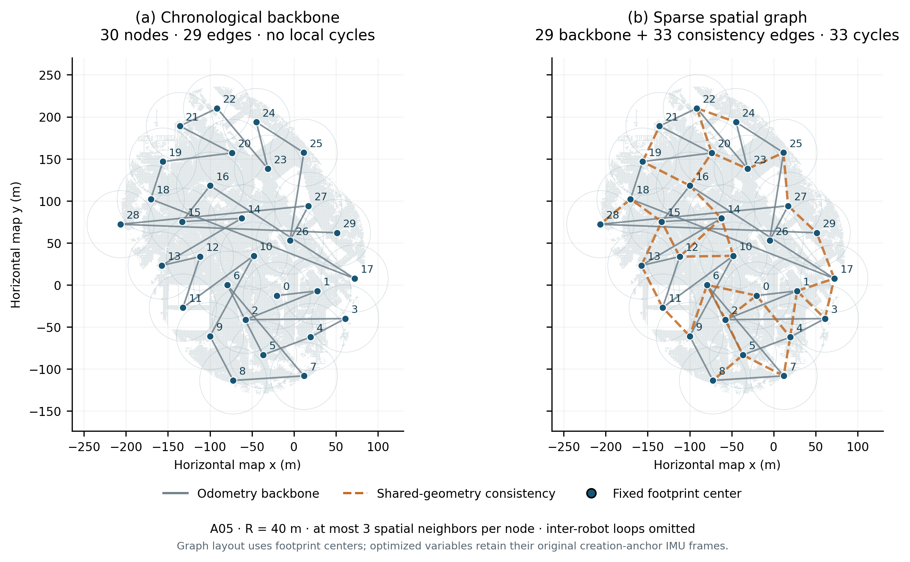

The original 29-edge backbone is retained. An additional 33 map-consistency factors connect nonconsecutive overlapping crops supported by shared native point IDs.

Nodes are drawn at circle centers to show spatial relationships. The actual pose variables remain in creation-anchor IMU frames. These panels show topology, not a new optimized solution.
| Construction on 148 | Measured value |
|---|---|
| All 30 publication-prefix updates | 1.318 s |
| Slowest prefix update | 81.1 ms |
| Peak resident memory, fresh inspection process | 157.7 MiB |
| Shared-point support | 4,660–46,303 IDs per accepted edge |
| Candidate exclusions | 16 insufficient support; 11 degree limit |
Construction runs only on each robot's local sealed geometry. Overall communication and CBS update time still require matched measurements: new constraints can change beliefs and solver work.
Evidence caveat. Shared crops are correlated. These conservatively weighted constraints preserve map consistency; they are not independent loop detections and do not independently correct raw odometry drift.
Implementation verification: 42 native Python/ROS tests and 17 C++ tests passed. The growing three-robot GPU test retained 21 local consistency factors and nine inter-robot registration pairs, reached a shared frame, and passed final geometry validation. See verification and binary hashes. A new all-14 dataset accuracy run has not been performed.
Vector figure · Measured graph, input/source hashes and all decisions